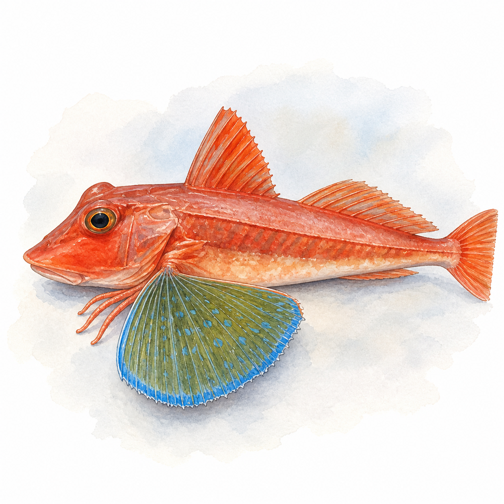

トップ › 魚種一覧 › ホウボウ
本日のホウボウの釣果報告はまだ届いていません。
出船情報は各船宿のWebサイト・電話で直接ご確認ください。
現在この魚種は過去1年の実績データが少なく、釣り方・タックル目安のみ表示しています。
シーズン概況 無料
過去1年の釣果記録は4件と少ないため、月別トレンド・釣れる港・船宿実績・大物実績は表示しておりません。データ蓄積後に公開します。
釣り方
相模湾・外房が主漁場。春～初夏（4〜7月）が旬。底棲の魚で、胴突き仕掛けで底を探る。テンヤ五目船では副産物として釣れることもある。食べると白身で美味しい。
タックル目安
- 釣法: 胴突き
- 竿: 根魚竿 2.2〜2.5m、M
- リール: スピニング 2500番
- ライン: PE 1〜1.5号
- 仕掛け: 胴突き仕掛け（市販 2〜3本針）＋オモリ 30〜50号
- エサ: ゴカイ・アオイソメ
サイズ目安
25〜40cm が中心
白身で食べると美味しく、食用価値が高い。春季が旬で脂が乗る。
よくある質問
ホウボウは関東のどこで釣れますか？
現在この魚種の過去1年の実績データは件数が少なく、釣れる港の集計は今後のデータ蓄積を待ちます。
ホウボウは今日釣れていますか？
本日の釣果報告はまだ届いていません。出船情報は各船宿のWebサイト・電話で直接ご確認ください。出船報告があり次第このページに反映されます。
ホウボウの釣れる時期は？
現在この魚種の過去1年の実績データが少なく、月別の傾向は集計中です。
ホウボウのサイズ目安は？
過去1年の実測サイズは平均 38.0cm（最大 48cm）。25〜40cm が中心
ホウボウの釣り方・タックル目安は？
相模湾・外房が主漁場。春～初夏（4〜7月）が旬。底棲の魚で、胴突き仕掛けで底を探る。テンヤ五目船では副産物として釣れることもある。食べると白身で美味しい。
この魚種の予測・分析 まもなく公開
開発中ホウボウ 日別予測・船宿別分析
ホウボウの明日〜1週間後のエリア別・船宿別予測、海況相関の詳細分析を提供します。
月額500円 / スポット100円（決済は準備中）。
 ホウボウ
ホウボウ
